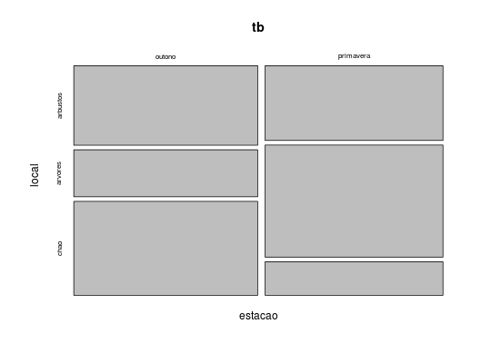
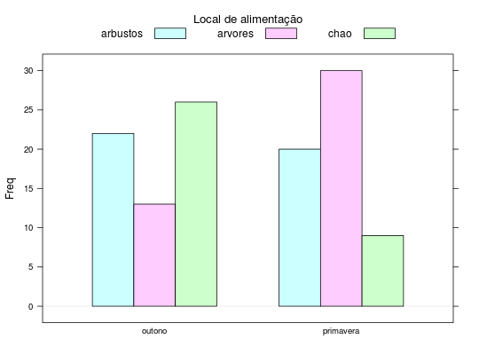

Estudo sobre o número de pássaros de uma particular espécie observados em diferentes locais de alimentação na floresta. O estudo foi realizado em duas estações do ano.
Um data.frame com 6 observações e 3 variáveis, em que
estacaolocalpassarosAndrade, D. F., Ogliari, P. J. (2010). Estatística para as ciências agrárias e biológicas com noções de experimentação (2nd ed.). Florianópolis, SC. Editora da UFSC. (Tabela 2.12, pág. 81)
data(AndradeTb2.12) str(AndradeTb2.12)#> 'data.frame': 6 obs. of 3 variables: #> $ estacao : Factor w/ 2 levels "outono","primavera": 2 1 2 1 2 1 #> $ local : Factor w/ 3 levels "arbustos","arvores",..: 2 2 1 1 3 3 #> $ passaros: int 30 13 20 22 9 26(tb <- xtabs(passaros ~ estacao + local, data= AndradeTb2.12))#> local #> estacao arbustos arvores chao #> outono 22 13 26 #> primavera 20 30 9mosaicplot(tb)library(lattice) barchart(tb, stack = FALSE, horizontal = FALSE, auto.key = list( title = "Local de alimentação", cex.title = 1.1, columns = 3))